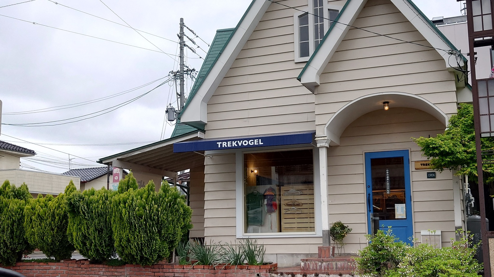
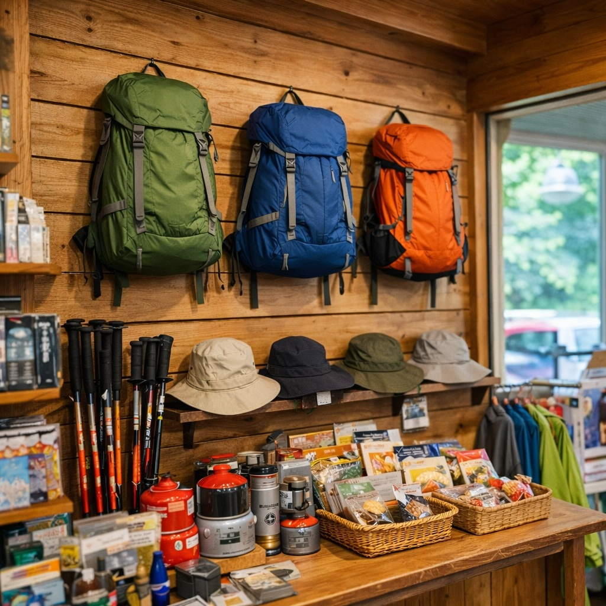
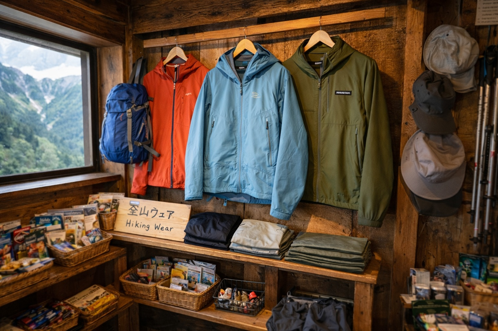
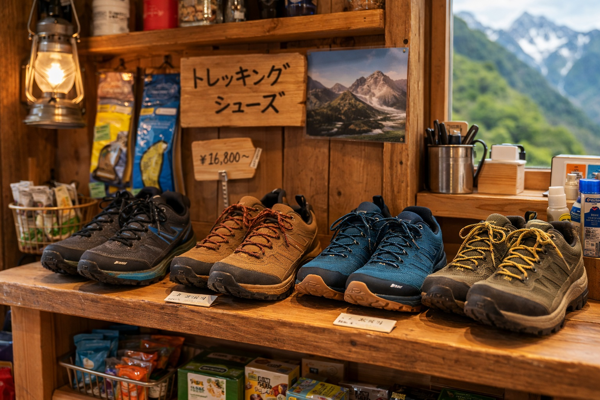
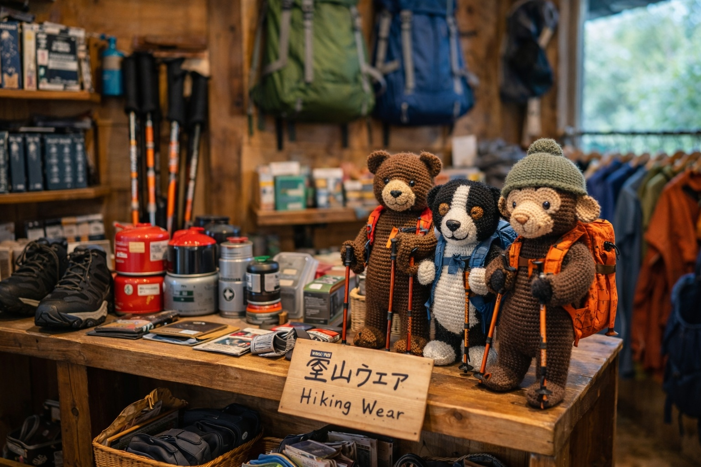

01
店長の確かな目利き
店長自身が登山やハイキングを楽しみながら、本当に使いたいと思える道具だけをセレクトしています。
登山口の駅前にある、山へ向かう人のための店
電車を待つ時間に、ふらっと立ち寄れる。
店先から穂高岳連峰を望みながら、次の山行に必要な道具と出会えるアウトドアショップです。
CONCEPT
お店は登山口となる駅前の立地。朝の出発前に忘れ物を見つけたときも、下山後に次の道具を見たくなったときも、 気軽に立ち寄れる距離にあります。店先からは穂高岳連峰が見え、山の空気を感じながら道具選びを楽しめます。

ABOUT SHOP
穂高の登山口駅前にある小さなアウトドアショップ。登山へ向かう朝、下山した帰り道、電車を待つ少しの時間に立ち寄れる場所です。
店長自身も登山を楽しむハイカー。実際に山で使って良いと感じたもの、本当に役立つ道具だけを厳選して店頭に並べています。
初めての登山装備から、こだわりのギア選びまで。気軽に相談できるアウトドアショップです。
FEATURES
店長自身が登山やハイキングを楽しみながら、本当に使いたいと思える道具だけをセレクトしています。
電車を待つ時間にふらっと寄れる、登山前後にちょうどいい場所。必要なものを、必要なタイミングで選べます。
店先から見える穂高岳連峰。山への期待感が高まるロケーションも、この店の魅力のひとつです。
OWNER
店長自ら登山やハイキングを楽しんでいるからこそ、使う場面や山行スタイルに合わせた提案ができます。 初めてのハイキングから本格的な縦走まで、お客様のご要望に沿って無理なく選べるよう丁寧にアドバイスします。
Store Owner's View
店長 / 山歩き好きのギアセレクター
山で本当に役立つ道具を、わかりやすく丁寧にご案内します。
見た目だけではなく、背負いやすさ、歩きやすさ、使いやすさ。 実際の山で役立つかどうかを大切にして商品を選んでいます。
SELECTED ITEMS

日帰りハイクから山小屋泊まで。背負いやすさと容量のバランスを重視したモデルを厳選。

歩行中の快適さとレイヤリングのしやすさを大切にした、季節に合わせやすいウェアを提案。

歩く山域や足の形に合わせた選び方をアドバイス。履き心地の違いも丁寧にご案内します。

ボトル、ヘッドライト、行動食まわりなど、山行を快適にする小さな道具も充実しています。
PHOTO GALLERY
店頭の雰囲気や商品写真を掲載するためのセクションです。実際の写真に差し替えるだけでそのまま使えます。
新入荷アイテムや季節のおすすめ、店内の様子などをInstagramでもご案内できます。
ACCESS
電車の待ち時間にも立ち寄りやすい、駅前のアウトドアショップです。 登山前のひと準備にも、下山後の立ち寄りにもご利用ください。
※ 現在は「穂高駅」で仮設定しています。実店舗の住所に合わせて差し替えてください。